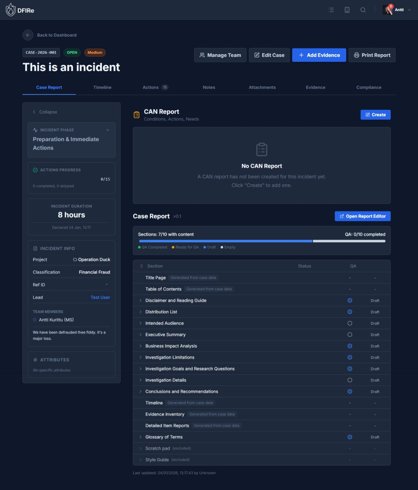

Case Management
Cases are the central organizing unit in DFIRe. Every investigation, incident, or forensic analysis is tracked as a case.
Understanding Cases
A case in DFIRe represents a single investigation or incident. Cases contain:
- Evidence items - Digital artifacts being analyzed
- Attachments - Files related to the investigation
- Notes - Investigation notes and findings
- Timeline events - Chronological record of activities (incident mode)
- Reports - Formal investigation documentation with QA workflow
- Team assignments - Who is working on the case
Case Modes
DFIRe supports two case modes, each with a different set of features:
| Feature | Investigation | Incident |
|---|---|---|
| Case Report | Yes | Yes |
| Evidence | Yes | Yes |
| Notes | Yes | Yes |
| Attachments | Yes | Yes |
| Timeline | - | Yes |
| Actions Checklist | - | Yes |
| Compliance Timers | - | Yes |
| Phase-based Workflow | - | Yes |
| CAN Report | - | Yes |
| Duration Tracking | - | Yes |
| Slack Workspace | Optional | Optional |
You can escalate an Investigation to an Incident at any time if the situation requires active response coordination.
Default Case Types
DFIRe ships with preconfigured case types for common scenarios. Each case type includes custom fields and, for incident types, a predefined action checklist. Administrators can modify these or create new types in System Settings > Case Types.
Incident Response Types
| Case Type | Key Custom Fields |
|---|---|
| General Incident Response | Attack Vector, Containment Status, PII Involved, Systems Affected |
| Ransomware Attack | Ransom Amount, Cryptocurrency Wallet, Decryptor Available, Backup Status |
| Phishing Campaign | Sender Domain, Users Targeted, Users Clicked, Credentials Harvested |
| Malware Infection | Malware Family, Detection Source, File Hash, Auto-Action Taken |
| Cloud Security Incident | Cloud Provider, Account ID, Resource ID, Publicly Exposed |
| DDoS Attack | Attack Type, Target Asset, Peak Bandwidth, ISP Ticket Reference |
| Network & Perimeter Compromise | Entry Point, Lateral Movement, C2 Detected, Data Exfiltration |
| Critical Vulnerability Response | CVE ID, CVSS Score, Exploited in Wild, Assets Affected, Patch Deadline |
| Accidental Data Leak | Data Types, Leak Source, Recipient Type, Records Exposed |
| Financial Fraud | Fraud Type (BEC, Invoice, CEO), Attack Method, Est. Loss Amount |
| Lost/Stolen Equipment | Device Type, Serial Number, Encrypted, Contains PII, Police Report |
| Physical Security Incident | Incident Location, Access Method, CCTV Available, Assets Affected |
| Supply Chain / Third-Party Incident | Vendor Name, Service Affected, Data Shared, Contract Reference |
Investigation Types
| Case Type | Key Custom Fields |
|---|---|
| General Forensic Investigation | Scope of Work, Legal Authority, Requestor, External Case Ref, Data Size |
| Internal Compliance Violation | Violation Category, Subject Employee, HR Case Ref, Legal Hold, Financial Impact |
| Malware Analysis Request | File Hash, Analysis Depth, Source IP, Submitter, Appears Targeted |
Incident case types include pre-built action checklists organized by incident phase. When you create a case with one of these types, the Actions tab is automatically populated with relevant response steps.
Creating a Case
-
Navigate to the Dashboard
The Dashboard is the main landing page showing all active cases.
-
Click "New Case"
The button is located in the top-right corner of the Dashboard.
-
Select the Case Mode
Choose between Investigation or Incident mode. This determines which features are available.
-
Set Severity
Select the severity level: Critical, High, Medium, Low, or Info.
-
Enter Case Details
- Title: A descriptive name for the case
- Case Number: Auto-generated unique identifier (displayed for reference)
- Status: Initial status (Open, Closed, or Archived)
- Classification: Select a case type to define the schema and workflows
- Project: Optional - group related cases together
- Description: Summary of what you're investigating
-
Create the Case
Click "Create Case" to save. You'll be taken to the case detail view.
Team Assignment: Team members are assigned after case creation using the "Manage Team" button in the case header, not during the initial creation.
The Case Detail View
The case detail view is divided into two main areas: the tabbed content area and the collapsible sidebar.
Tab Organization
Tabs are organized differently depending on the case mode:
Investigation Mode Tabs
- Case Report - Investigation report with sections and QA workflow
- Evidence - Digital artifacts being analyzed
- Notes - Investigation notes with markdown support
- Attachments - Files related to the case
- Workspace - Slack collaboration (if enabled)
Incident Mode Tabs
- Case Report - CAN Report and investigation report
- Timeline - Chronological event log
- Workspace - Slack collaboration (if enabled)
- Actions - Phase-based response checklist
- Notes - Investigation notes
- Attachments - Case files
- Evidence - Digital artifacts
- Compliance - Regulatory timers and deadlines
Case Report Tab
The Case Report tab contains the formal documentation for your case.
CAN Report (Incident Mode Only)
For incident cases, the CAN Report provides a structured summary:
- Conditions: Current state of the incident - what is happening
- Actions: Steps being taken or that have been taken
- Needs: Resources, approvals, or assistance required
Investigation Report
The Investigation Report is a sectioned document with a three-stage QA workflow:
| Stage | Description |
|---|---|
| Draft | Section is being written and edited |
| Ready for QA | Section is complete and awaiting review |
| QA Completed | Section has been reviewed and approved |
Report sections are defined by your case type configuration. Each section can be independently tracked through the QA workflow.
Timeline Tab (Incident Mode)
The Timeline provides a chronological view of all case events:
- Case creation and status changes
- Phase transitions
- Notes added (with "Add to Timeline" option)
- Evidence added or modified
- Team changes
- Action completions
For detailed timeline documentation, see Timeline.
Actions Tab (Incident Mode)
The Actions tab displays the incident response checklist organized by phase. Actions are automatically populated based on your configured incident phases.
Action States
- Pending: Not yet started
- Done: Completed successfully
- Ignored: Skipped (not applicable to this incident)
Progress is tracked in the sidebar, showing completed actions vs total actions.
Notes Tab
The Notes tab provides a space for investigation notes, updates, and findings. Notes are available in both Investigation and Incident modes.
Features
- Markdown support: Format notes using headers, lists, code blocks, tables, and other markdown syntax
- Case updates: Document progress, findings, and decisions as the investigation progresses
- Timeline integration: Optionally post notes to the case timeline for visibility (incident mode)
Each note is timestamped and attributed to the user who created it. Notes can be edited or deleted by their author or users with appropriate permissions.
Workspace Tab
When Slack collaboration is enabled for your tenant, the Workspace tab provides integrated communication:
- Create a dedicated Slack channel for the case
- View channel messages directly in DFIRe
- Cross-reference Slack discussions with case data
Slack collaboration must be configured by an administrator in System Settings > Collaboration. See Configuration for setup instructions.
The Case Sidebar
The collapsible sidebar on the right displays key case information at a glance.
Incident Mode Sidebar
- Incident Phase: Current phase with color indicator and timestamp of last change
- Actions Progress: Visual progress bar showing completed/total actions
- Incident Duration: Live counter showing time since case creation (stops when case reaches final phase or is closed)
- Compliance Status: Overview of active compliance timers (click to navigate to Compliance tab)
All Cases
- Case Info: Project, Classification, Reference ID, Lead Investigator, Team Members, Description
- Attributes: Custom fields defined by your case type
Managing Team Access
Click "Manage Team" in the case header to modify team assignments after case creation.
Roles
| Role | Permissions |
|---|---|
| Lead Investigator | Full control including case deletion, team management, and closing the case |
| Investigator | Full read/write access to all case content |
| Viewer | Read-only access to case content |
Note: Users with the global "View All Cases" permission can see all cases regardless of assignment. Users with "Edit All Cases" permission have full access to all cases.
Case Status Lifecycle
Cases progress through these statuses:
| Status | Description | Editable |
|---|---|---|
| Open | Active investigation in progress | Yes |
| Closed | Investigation complete, case is read-only | No (can reopen) |
| Archived | Permanently closed, hidden from default views | No |
To close a case, click "Edit Case" and change the status. Closing a case makes it read-only to prevent accidental modifications.
Incident Duration: For incident cases, the duration counter stops when the case reaches its final phase or is set to Closed/Archived status.
Projects
Projects allow you to group related cases together. For example, you might create a project for:
- A large investigation spanning multiple devices
- Recurring investigations for a specific client
- Related incidents that share context
To create a project, click "New Project" on the Dashboard. You can then assign cases to the project when creating or editing them.
Filtering and Searching
The Dashboard provides several ways to find cases:
Filters
- Project: Show cases in a specific project
- Investigator: Show cases assigned to a specific user
- Status: Filter by Open, Closed, or all active statuses
- Mode: Show only Investigations or only Incidents
Tabs
- Active Cases: Open cases you're assigned to
- Archived: Cases that have been archived
Global Search
Use the search icon in the header for full-text search across all cases, evidence, and notes.